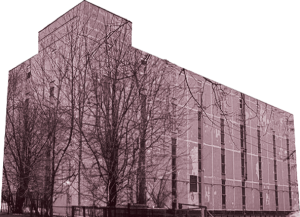
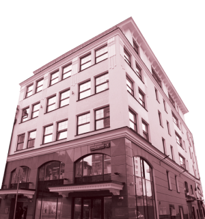
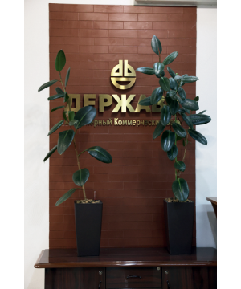

ИСТОРИЯ В ФАКТАХ
1994
2024
1994
Одно из помещений студенческого городка МГУ по адресу:
Ленинские горы, МГУ, здание АТС, стало первым
офисом «Державы».

5 марта выпускники МГУ Анатолий Гусаров, его сыновья
Владимир и Виктор и их друг Сергей Ентц основывают банк «Держава».
Дополнительная информация
1994–2000
Председатель правления «Державы» – Владимир Гусаров.
Председатель правления «Державы» – Владимир Гусаров.
Первые несколько лет банк функционируеткак инвестиционный бизнес
на рынках акций и государственных краткосрочных облигаций.
Дополнительная информация
Одно из помещений студенческого городка МГУ по адресу:
Ленинские горы, МГУ, здание АТС, стало первым
офисом «Державы».
1998
Клуб выпускников экономфака МГУ
По инициативе Владимира Гусарова основан Клуб
выпускников экономического факультета (КВЭФ
МГУ), членами которого стали многие сотрудники
банка. Девиз клуба – «Мы за рос кошь человеческого
общения!».
Экономический кризис
Дополнительная информация
Кризис 1998 года банк переживал тяжело,
но устоял и стартовал с новой стратегией развития: работа на рынке Private
Banking.
Она позволяла клиентам закрыть все базовые потребности
в финансовых услугах.
2000
2000-2003
Председатель правления «Державы» – Виктор Гусаров.
Председатель правления «Державы» – Виктор Гусаров.
2003
2003-2006
Председатель правления «Державы» – Сергей Ентц.
Председатель правления «Державы» – Сергей Ентц.
2005
Большие перемены
Бизнес претерпевает существенное плановое сокращение и готовится к продаже.
Виктор Гусаров отходит от участия в управлении банком
и остается акционером с долей 20%.
Сергею Ентцу и Владимиру Гусарову принадлежат
по 40% активов, и с этого момента они занимаются
управлением банка вдвоем. Партнеры рассматривают возможность закрытия или продажи
бизнеса, но сделка с потенциальным покупателем срывается. Ентц
и Гусаров снова наращивают кредитный портфель.
2006
2006–2012
Председатель правления «Державы» – Александр Ушаков.
Председатель правления «Державы» – Александр Ушаков.
2007
Предпродажная
подготовка
Кредитный портфель «Державы» сильно сокращается. Партнеры ищут стратегического
инвестора и вступают в сделку с латвийским банком Rietumu (г. Рига),
но получают отказ ЦБ РФ от акцепта сделки по причине плохих отношений с Латвией.
2008
Кредитный портфель в 2008 году становится проблемным,
но своевременные решения Сергея Ентца помогают выйти из кризиса
и начать снова набирать обороты.
2009
РЕПО
и обеспечение
по кредитам
Банк «Держава» активно приобретает облигации
из Ломбардного списка ЦБ РФ, первым из российских банков отказавшись от размещения и
привлечения средств на межбанковском рынке. Теперь - только сделки РЕПО, либо на
рынке, либо с ЦБ.
Банк успешно выходит на рынок тендерного кредитования для обеспечения заключения
юридическими лицами государственных контрактов.
2010
Бурный рост
и переезд
«Держава» продолжает расширять бизнес: растет
перечень предоставляемых услуг, увеличиваются количественные показатели – валюта
баланса, капитал,
клиентская база. На волне бурного роста банк готовится к переезду в новый офис.
2011

«Держава» обретает
новое место жительства.
Теперь офис банка
расположен по адресу:
Большой Саввинский
переулок, д. 2, cтр. 9.
2012
Новые горизонты
и новая структура собственников
Дополнительная информация
Банк принимает новую стратегию развития. Рейтинговое агентство «Эксперт РА»
присваивает «Державе» рейтинг A,
который оценивает уровень кредитоспособности «Державы» как умеренно высокий.
Сергей Ентц становится председателем совета директоров и остается им
до 2023 года.
Владимир Гусаров и Сергей Ентц договариваются разойтись в бизнес-проектах: Ентц выкупает долю Гусарова и становится контролирующим бенефициаром.
Рейтинговое агентство «Эксперт РА» присваивает «Державе» рейтинг A, который оценивает уровень кредитоспособности «Державы» как умеренно высокий.
Владимир Гусаров и Сергей Ентц договариваются разойтись в бизнес-проектах: Ентц выкупает долю Гусарова и становится контролирующим бенефициаром.
Рейтинговое агентство «Эксперт РА» присваивает «Державе» рейтинг A, который оценивает уровень кредитоспособности «Державы» как умеренно высокий.
2012–2014
Председатель правления «Державы» –
Мария Служак.
Председатель правления «Державы» –
Мария Служак.
2013
Облигации « Державы» были включены в Ломбардный список.
По РЕПО с ними другие банки могли привлекать до 2 млрд рублей непосредственно у ЦБ
РФ.
2014
Банковские
гарантии -
удаленно
«Держава» совместно с партнерами создает и выводит
на рынок новый с технологической точки зрения продукт
по дистанционной выдаче банковских гарантий для обеспечения исполнения госзаказов.
2014–2016
Председатель правления «Державы» – Светлана Биран.
Председатель правления «Державы» – Светлана Биран.
2015
14 место по РЕПО
Банк занимает 14-е место по абсолютному
объему валютного РЕПО с Банком России.
В марте «Держава» привлекла от ЦБ РФ сумму, равную пяти капиталам банка, скупив
дешевые еврооблигации российских эмитентов.
«Держава» запускает собственную систему дистанционного предоставления финансовых
продуктов
«Держава Онлайн».
2016

2016 – настоящее
время
Председатель правления «Державы» – Алексей Скородумов.
Председатель правления «Державы» – Алексей Скородумов.
Все обязательства
перед ЦБ РФ по РЕПО
были погашены, и больше «Держава» у ЦБ РФ
РЕПО в значимых объемах не привлекала.
Капитал «Державы» – около 3 млрд рублей.
2017
Капитал «Державы»
продолжает расти:
он составляет уже
более 5 млрд рублей.
2018
Капитал «Державы» превышает 6 млрд рублей.
В «Державе» становится доступным дистанционное открытие счетов
для юридических лиц: банковского
счета, а также счета подрядчиков и поставщиков Фонда капитального ремонта
многоквартирных домов города Москвы.
Банк выдает 20% всех гарантий
по госзакупкам в РФ (в штуках).
2019
Капитал «Державы»
составляет 7,7 млрд рублей.
составляет 7,7 млрд рублей.
В банке внедряются новые
продукты: кредит на исполнение государственного контракта и гарантия
обеспечения исполнения
гарантийных обязательств.
2021
«Держава» занимает 3-е место по эффективности, 13-е – по рентабельности
в рейтинге газеты «Коммерсантъ».
9,5 млрд рублей
составляет собственный капитал банка.
По этому показателю банк занимает 8-е место и 92-е место – по активам.
Экономфаку МГУ - 80!
Дополнительная информация
К 80-летию экономического факультета МГУ им. М. В. Ломоносова при поддержке
«Державы» в декабре создан и запущен новый современный сайт факультета
2023
Капитал «Державы» (после выплаты дивидендов) составляет
12 млрд рублей.
Активы – 47 млрд рублей.
Банк показывает максимальную
в своей истории прибыль –
7 млрд рублей.
В национальной рейтинговой шкале
банку присвоен показатель BBB-(RU) позитивный. Национальный кредитный рейтинг
повышает кредитный
рейтинг «Державы» до BBB.ru со стабильным прогнозом.
Дополнительная информация
В национальной рейтинговой шкале банку присвоен показатель BBB-(RU) –
позитивный. Национальный кредитный рейтинг повышает кредитный рейтинг
«Державы» до BBB.ru со стабильным прогнозом.
2024

«Держава»
празднует 30-летие. Игра продолжается...